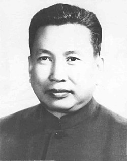
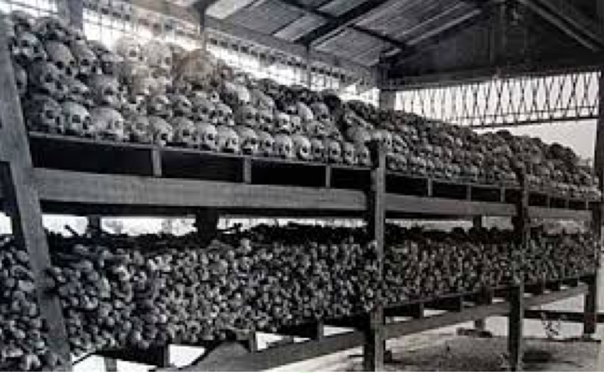

Pol Pot
1925.május.19-én született Kambodzsában és 1998.április.15-én hunyt el, születési neve Szaloth Szár volt. Kommunistanacionalista politikus, 1975-79 között Kambodzsa, akkori nevén a Demokratikus Kambodzsa vezetője volt. Pol Pot a korai 1950-es években Párizsban tanult, ott ismerkedett meg a baloldali eszmékkel. Több akkori diáktársa később aktív résztvevője lett mozgalmának. Hazatérése után a kommunista pártot szervezte, amelynek 1963-tól vezetője lett. Pol Pot célja a tökéletes kommunizmus megteremtése volt.(Tudj meg többet az életéről!)
Pol Pot utópiájának kialakulására nagy hatással voltak az ország északnyugati erdőségeiben töltött évek, ahol látta, hogy a hegyi törzsek önellátóan élnek, nem használnak pénzt és nem ,,rontotta meg" őket a buddhizmus. A vörös khmerek eltörölték a pénzt, a szabad piacot,a magántulajdont, módszeresen megsemmisítettek mindent, ami a városi élet része volt, illetve megkönnyítette a mezőgazdasági munkát.

Egyik alaptézisük a khmer felsőbbrendűség volt. Ami 1975 és 1979 között a Demokratikus Kambodzsa keretei között történt, ennek a szélsőséges, radikális maoista és marxista-lennista utópiának a gyakorlatba való áttünése volt. A földművelés az átnevelés eszköze volt. Az éhezés, az állandó robotolás, a betegségek miatt több százezer ember vesztette életét. A kommunista hatalomátvétel idején is vidéken élő lettek a megbízható régi emberek, míg a kitelepítettek a megbízhatatlan, ezért elpusztítani szánt, felesleges új emberek. Utóbbiak a közkonyhákon kisebb adag ételt kaptak, mint a régiek. A családi kapcsolatokat korlátozták, az embernek tilos volt érzelmeket kimutatnia. Arra kényszerítették a lakosokat, hogy tiszteljék, higgyenek és engedelmeskedjenek az Angkar Padevatnak, az ország vörös khmer vezető szervezetének. A halálos ítélethez gyakran az is elég volt, ha az érintettnek szemüvege volt, puha volt a tenyere, ami azt jelezte, hogy nem végzett fizikai munkát.

A becslések szerint a Demokratikus Kambodzsában 1,7 milló embert gyilkoltak meg, éheztettek vagy dolgoztattak halálra. Pol Potot 1979-ben a Kambodzsába bevonuló vietnámi hadsereg távolíotta el a hatalomból. Ezután visszavonult az ország nyugati, Thaifölddel határos erdős vidékre, de a környék egy részét továbbra is uralma alatt tartotta, és évekig támadásokat intézett csapataival a vietnámiak által felügyelt Kambodzsa ellen.